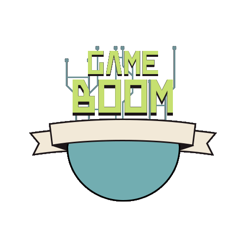
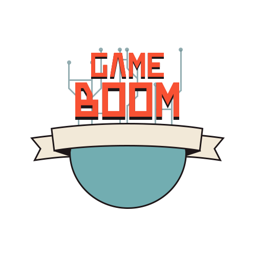
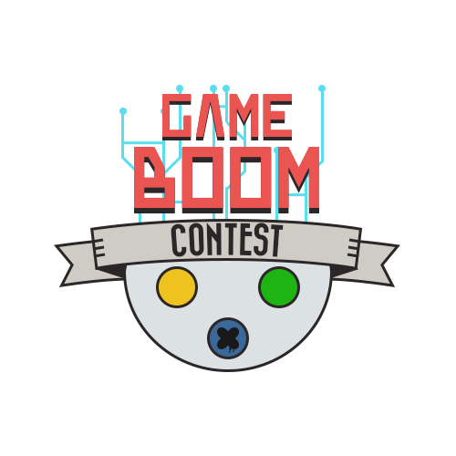

Конкурс Game Boom
2013, дизайн логотипа
В 2013 году я сделал логотип для конкурса по разработке игр XGM Community. По задумке логотип состоял из геймпада, символизирующего игры, электропроводящих цепей - отсылка ко всякого рода бэкэнду, названия конкурса и логотипа сайта на одной из кнопок.

Определяемся с формами

Выбираем цвета

Результат
Университет юного библиотекаря
2014, дизайн логотипа
Логотип конференции "Университет юного библиотекаря" был сделан для Вологодской областной юношеской библиотеки им. Тендрякова. В рамках заказа были предоставлены изображения для логотипа, с которыми я сделал простые текстовые варианты, а в дополнение сделал логотип на свой вкус с применением материалов и ярких цветов. Заказчик выбрал вариант с совой, которым пользуется до сих пор при проведении данной конференции.